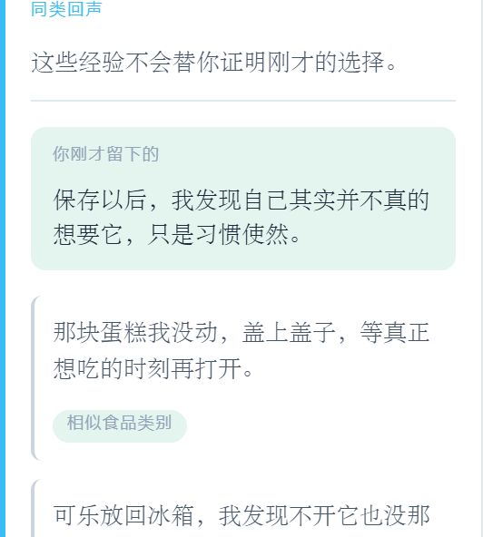

一层安静的经验
回声不是瀑布流，而是当你完成自身余波后，围绕当前选择出现的一层同类经验。
匹配从精确商品向外扩展到同系列、同场景、同心理原因。最有价值的相似性，往往不在同品牌，而在同一种夜晚、同一种浪费感。
精确商品 / 同系列 / 同场景 / 同心理原因
从最具体的同款食品，逐层放宽到同一种心理原因。越外层越安静，也越接近“原来不止我一个人”。
完成个人余波后才展示
系统不会在仪式结束就推送别人的经验。你先回答自己的余波，再看见同类，顺序不会被颠倒。
不显示头像、昵称、社交反馈与位次
没有头像、昵称，也没有社交反馈与位次。聚合比例只在样本量足够时展示，避免暴露个人或制造伪权威。
未来可选择贡献匿名短句
当前竞赛原型仅展示经过审核的本地示例；用户贡献尚未开放。完整产品中，用户可在明确同意后贡献匿名短句。
未来支持撤回自己贡献的短句
当前竞赛原型没有用户贡献，因此也没有实际撤回入口。完整产品中，贡献应始终可解释、可撤回。
同心圆涟漪
从中心的“你的余波”向外辐射四层匹配，最外层是最小样本量阈值。
越靠近中心，匹配越具体；越向外，相似性越偏向心理原因。最外层的虚线提醒：样本不够时，聚合比例不会出现。
来到这里，理解什么
群体经验不施加压力；开放的是经验，不是身份。
围绕当前选择的一层经验
它在你完成自身余波后才出现，围绕你当下这件食品和心理原因展开，安静地告诉你“原来不止我一个”。
开放的是经验，不是身份
没有头像、昵称，也没有社交反馈与位次。完整产品中的贡献应可撤回；当前竞赛原型只展示本地审核示例，不接收用户投稿。样本不够时不展示聚合比例，避免制造伪权威。
PRODUCT PROOF · 来自真实竞赛演示
先回答自己，再看见回声。
下面两张截图来自 官方演示数据。第一张是你刚才留下的余波回答，它始终位于他人回声之前；第二张是系统在你回答之后展示的三段审核示例。顺序不会被颠倒。
你先说出自己的感受
系统不会在仪式结束就推送别人的经验。你先回答自己的余波，这一步完成后，回声才会出现。

再看见三段相似处境的匿名经验
下面不是处理建议，而是与你这次食品类别、感受或生活场景相近的三段审核示例。没有头像、昵称、点赞、回复或人数。

你们没有做出相同的选择，但可能经历过相似的犹豫。